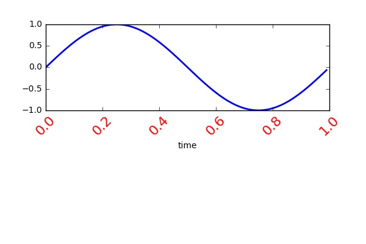

While it is very easy to draw many types of previously defined figures using matplotlib, customizing figures and plotting several plots in a same figure can be tricky. Here, I want to go over some of the basics of how different layers of a figure connected to each other to get a better understanding on what is needed for customizing figures. There are three layers to the matplotlib API. The matplotlib.backend_bases.FigureCanvas, the matplotlib.backend_bases.Renderer and the matplotlib.artist. Artist is the object that knows how to use a renderer to paint onto the canvas. As a user we are mostly interested in things such as laying out the figure, text, and lines which are all handled by the Artist.
There are two types of Artists: primitives and containers. The primitives are the graphical objects we want to paint (such as lines, text, etc.) and the containers are places to put the primitives (such as Axis, Axes and Figure).
Figure container
A common way to create a plot is to instantiate a Figure instance:
import matplotlib.pyplot as plt
fig = plt.figure()
Axes container
After setting the Figure, create one or more Axes or Subplot instances:
ax = fig.add_subplot(2,1,1) # two rows, one column, first plot
and use the Axes instance helper methods such as plot(), text() and hist() to create the primitives and also customize it:
import numpy as np
t = np.arange(0.0, 1.0, 0.01) # creating numbers as time
s = np.sin(2*np.pi*t) # creating sin of time
ax.plot(t, s, color='blue', lw=2)
ax.set_xlabel('time')
Axis containers
The matplotlib.axis.Axis instances handle the drawing of the tick lines, the grid lines, the tick labels and the axis label. Follwing code costumize the xaxis labels:
for label in ax.xaxis.get_ticklabels():
# label is a Text instance
label.set_color('red')
label.set_rotation(45)
label.set_fontsize(16)
plt.savefig('Example.png')
Tick containers
The matplotlib.axis.Tick is the final container object. The Tick contains the tick and grid line instances, as well as the label instances for the upper and lower ticks.
